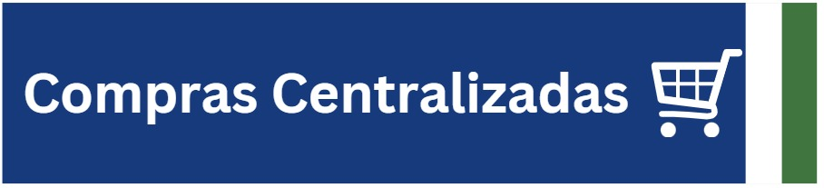

Redecompras
Coordenação de compras governamentais, procedimentos sob a Nova Lei de Licitações (Lei 14.133/21), editais e compras centralizadas.
Ver AtribuiçõesConsolidação e integração do planejamento das contratações públicas de bens, serviços e obras em todo o Estado do Rio de Janeiro.
Painéis analíticos e pesquisa de preços de mercado em tempo real.
Modelos, manuais e procedimentos completos para cada fase da contratação.
A Rede Logística do Estado do Rio de Janeiro (REDELOG), instituída pelo Decreto Estadual nº 46.050/2017 e atualizada pelo Decreto nº 48.178/2022 e pelo Decreto nº 48.650/2023, é a estratégia de governança e cooperação técnica da SEPLAG com todos os órgãos e entidades do Poder Executivo Estadual.
Seu objetivo é integrar e capacitar os servidores que atuam no levantamento de demandas, licitações, gestão de contratos, controle de estoques, patrimônio imobiliário/mobiliário e gestão de frotas e transportes.
A atuação operacional da Redelog é desdobrada em cinco redes funcionais, cada uma coordenada por especialistas temáticos com o objetivo de apoiar os gestores setoriais.
Coordenação de compras governamentais, procedimentos sob a Nova Lei de Licitações (Lei 14.133/21), editais e compras centralizadas.
Ver AtribuiçõesIntegração e qualificação dos pregoeiros, agentes de contratação e comissões de contratação de todo o Estado.
Ver AtribuiçõesDiretrizes e padronização para a gestão, acompanhamento, repactuação e fiscalização técnica e administrativa de contratos públicos.
Ver AtribuiçõesGestão e controle do patrimônio móvel e materiais do Estado, operação do sistema SBM RJ, inventários e desfazimento.
Ver AtribuiçõesGestão estratégica de transportes oficiais, frotas próprias e locadas, controle de combustíveis e logística veicular.
Ver AtribuiçõesAcompanhe o passo a passo completo da governança e instrução processual de contratações públicas sob a égide da Lei Federal nº 14.133/2021 e decretos do Rio de Janeiro.
Consolidação do DFD (Documento de Formalização de Demanda), padronização no Catálogo e inclusão no Plano de Contratações Anual (PCA RJ).
Elaboração do DOD, Estudo Técnico Preliminar (ETP), Matriz de Riscos, Termo de Referência (TR), Pesquisa de Preços e Parecer Jurídico.
Publicação do Edital convocatório, realização da sessão pública do certame, julgamento de propostas, habilitação e homologação.
Formalização do contrato, empenho, designação de fiscais e gestores, atesto, liquidação, pagamentos e controle de garantias.
Administração do ciclo de vida dos bens materiais, tombamento no SBM RJ, estoques, alienação, além da gestão de frotas e transportes.
Fique por dentro das atualizações normativas, comunicados operacionais dos sistemas e prazos do calendário logístico.
Disponibilização do Painel Gerencial que consolida todas as informações das etapas de elaboração e formalização das demandas estaduais.
Ambiente homologado para que os servidores dos órgãos realizem simulações práticas sem impactar a base de produção do Estado.

Entrada em vigor da ARP nº 001/2025 para fornecimento "just-in-time" de materiais de consumo administrativo aos órgãos estaduais.
Assista a videoaulas, palestras, workshops e tutoriais operacionais nos canais oficiais.
Instruções sobre como preencher o Documento de Formalização de Demanda e os fluxos de aprovação na plataforma estadual.
Assistir no YouTubePasso a passo demonstrando operações de tombamento, transferência patrimonial, inventário anual e desfazimento de bens.
Assistir no YouTubeCiclo especial da Procuradoria Geral do Estado do Rio de Janeiro sobre jurisprudência e minutas padronizadas de editais.
Acessar Playlist